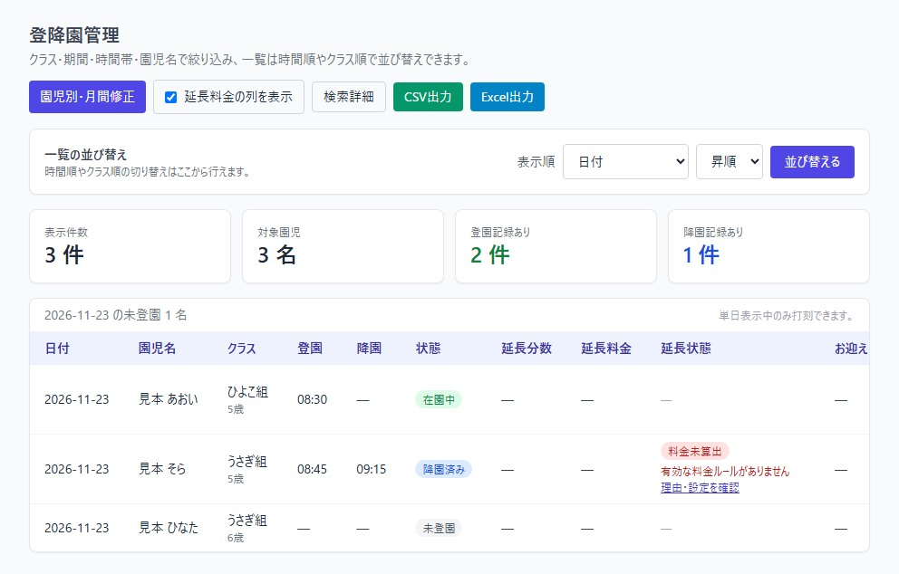
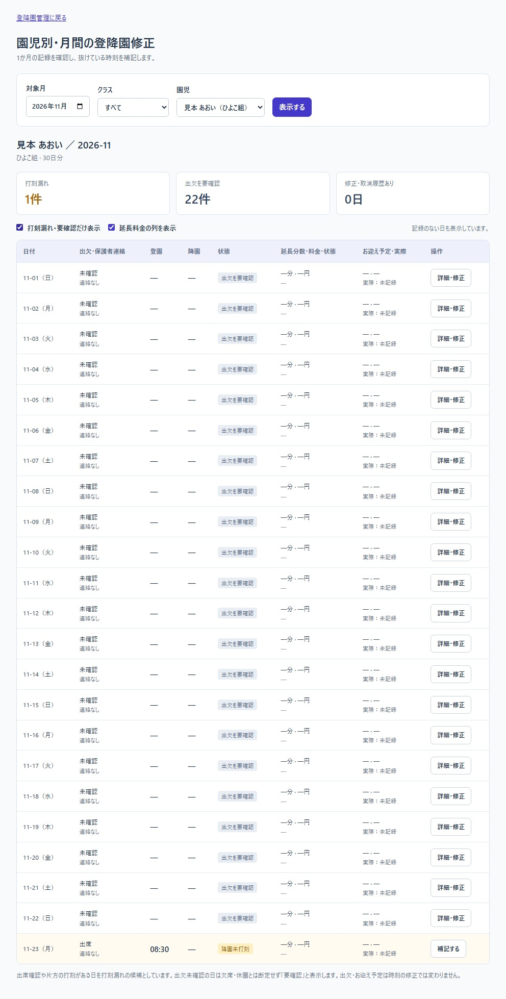
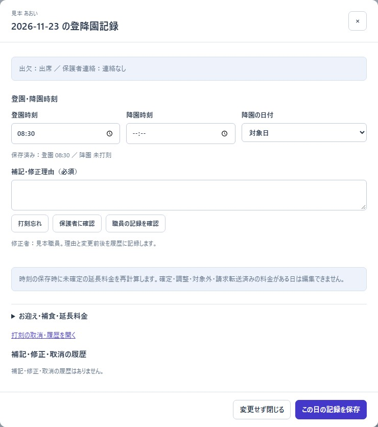
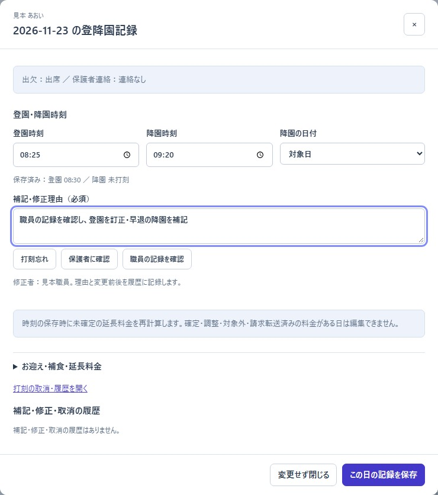
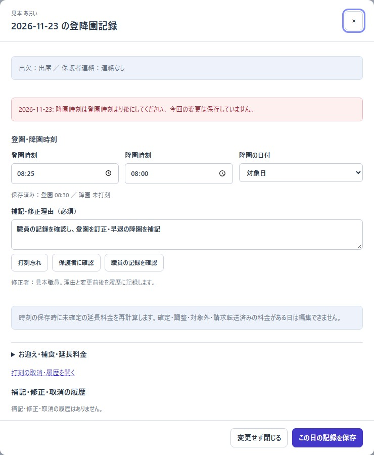
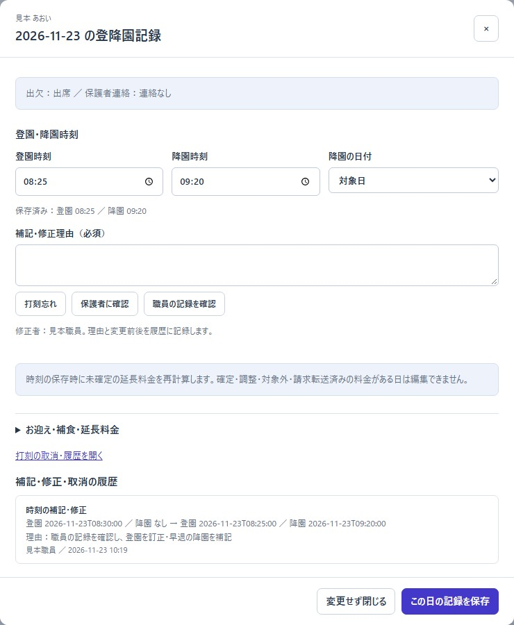
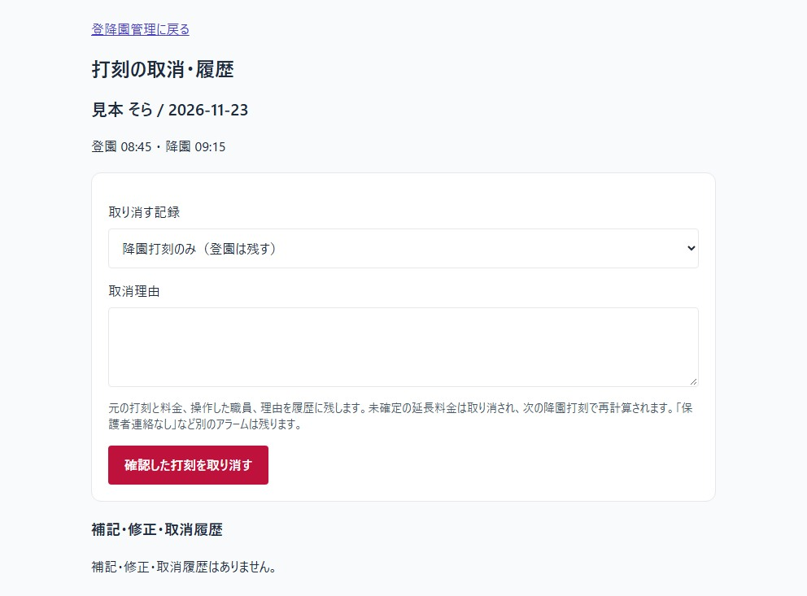
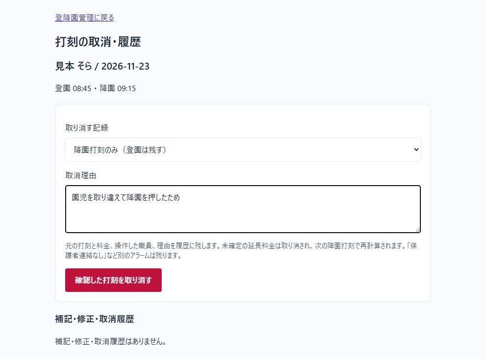
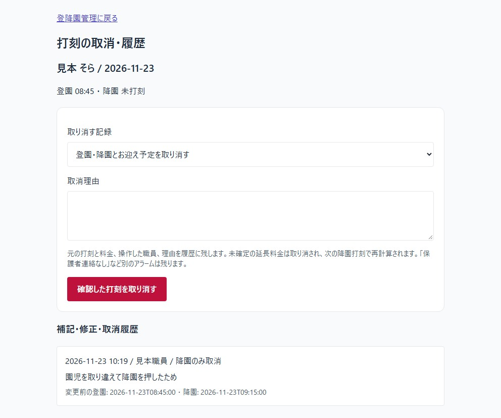

職員向け｜登降園記録の編集ができる方
登降園の時刻を補記・修正・取消する
打刻忘れは実際の時刻を補い、時刻の誤りは理由を付けて修正します。別の園児を打刻したときなどは、取り消す範囲を確かめます。
開く順番
職員メニュー → 登降園管理 → 園児別・月間修正
1登降園管理から月間修正を開く
「登降園管理」で園児名と日付を確認し、「園児別・月間修正」を押します。
お迎え予定は実際の打刻時刻とは別です。予定時刻を実績として入力せず、保護者や職員の記録で実際の時刻を確認します。

2対象月・クラス・園児から、その日を開く
「対象月」「クラス」「園児」を選んで「表示する」を押します。「打刻漏れ・要確認だけ表示」で絞り込めます。
対象日の「補記する」または「詳細・修正」を押します。出欠未確認の表示だけで、その日に登園していたとは判断しません。

3確認した時刻と理由を入力する
「登園時刻」「降園時刻」「降園の日付」を確認し、必要な時刻を入力します。補記・修正理由は必須です。翌日の降園は、必要な場合だけ「翌日（03:00まで）」を選びます。
見本では登園を08:30から08:25へ訂正し、早退時の降園09:20を補います。「この日の記録を保存」で確定します。「変更せず閉じる」や右上の×では保存されません。
降園が登園より前などのエラーが出たときは、日付・時刻を確認して直します。確定・調整・対象外・請求転送済みの料金がある日は編集できません。






4保存後に開き直して確かめる
同じ日の「詳細・修正」をもう一度開き、保存済みの時刻と「補記・修正・取消の履歴」を確認します。職員名、理由、変更前後が残ります。
保存時に未確定の延長料金を再計算します。出欠確認の結果や、お迎え予定を変更する操作ではありません。

5誤った打刻を取り消す
「打刻の取消・履歴を開く」から対象の園児・日付・時刻を見ます。登降園管理の「打刻の取消・履歴」や出欠確認の「誤打刻を取り消す」からも開けます。
「取り消す記録」で「降園打刻のみ（登園は残す）」または「登園・降園とお迎え予定を取り消す」を選び、取消理由を入れます。取消範囲を見直して「確認した打刻を取り消す」を押します。このボタンで取消が確定します。
中止するときは、保存ボタンを押さず上の戻るリンクで戻ります。料金が確定・調整・対象外・請求転送済みなら取消できません。




6取消後の時刻と履歴を確認する
見本は降園だけを取り消したため、登園08:45が残り、降園が「未打刻」になります。元の打刻・職員・理由は履歴で確認できます。
取消前の未確定料金は取り消され、次の降園で再計算されます。出欠確認に別のアラームが残っていれば、その理由も確かめます。複数日の空欄をまとめて補う操作は、管理者用の既存手順で扱います。

読み終えたら確認すること
このチェックは読み進めるための目印です。業務記録は送信されません。